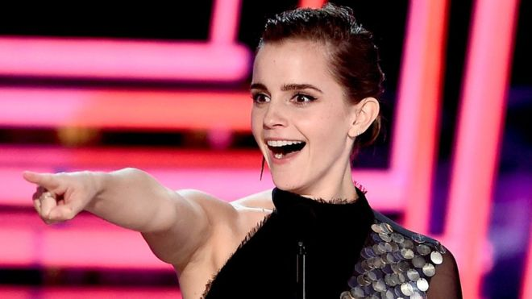

Main Page
Politics
Sports
Entertainment
Music
Is it time to scrap gender specific awards?

he voice final show has been crashed by an outsider and has been detained by security officials
Pepe the Frog 'is killed off to avoid being a hate symbol'
30 reseason to visit italy
Next Europe destination
Africa's best national parks
Wonder woman "Best movie..